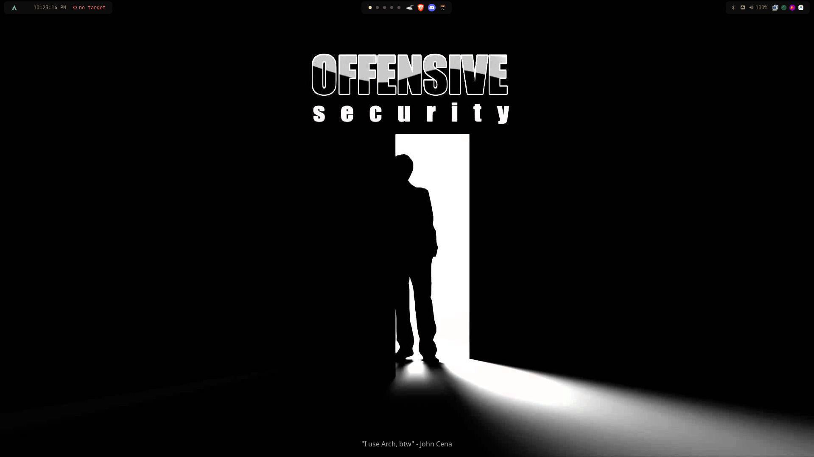
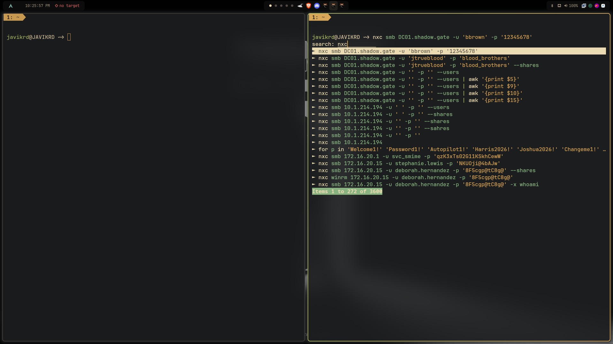

🖥️ Mi Entorno de Trabajo¶
Configuración personalizada de mi estación de trabajo sobre Arch Linux optimizada para auditorías de Active Directory, pentesting corporativo y seguridad ofensiva.
📸 Capturas de Pantalla¶
🖥️ Escritorio Principal¶
Entorno minimalista sobre Hyprland (Wayland) con Waybar superior integrada, wallpaper de Offensive Security y gestión limpia de ventanas.

💻 Terminal y Flujo de Trabajo Ofensivo¶
Terminal Kitty con Fish Shell, Starship Prompt y Tmux, aprovechando búsqueda inversa difusa (fuzzy search) para comandos de reconocimiento y explotación de Active Directory con NetExec (NXC).

⚙️ Stack y Componentes del Sistema¶
| Componente | Herramienta | Descripción |
|---|---|---|
| Sistema Operativo | Arch Linux | Base rolling-release ligera, actualizada y con soporte completo de herramientas. |
| Window Manager | Hyprland | Compositor dinámico Wayland basado en tiles con animaciones fluidas y bajo consumo. |
| Barra de Estado | Waybar | Barra modular con monitoreo de workspaces, audio, red y recursos en tiempo real. |
| Terminal | Kitty | Emulador de terminal acelerado por GPU con soporte de ligaduras y renderizado veloz. |
| Shell | Fish | Shell interactiva con autocompletado inteligente y resaltado de sintaxis. |
| Prompt | Starship | Prompt rápido y personalizable con indicadores de Git y estado del entorno. |
| Multiplexor | Tmux | Manejo de sesiones persistentes y división de paneles durante auditorías y labs. |
| Lanzador de Apps | Wofi / Rofi | Menú rápido para búsqueda y ejecución de binarios y utilidades. |
| Notificaciones | Dunst | Demonio de notificaciones minimalista y configurable. |
🚀 Instalación y Despliegue de los Dotfiles¶
El repositorio oficial incluye un script automatizado que comprueba dependencias faltantes y despliega las configuraciones en ~/.config, realizando copias de seguridad automáticas:
# 1. Clonar el repositorio
git clone https://github.com/JAVIKRD/dotfiles.git
# 2. Acceder al directorio
cd dotfiles
# 3. Ejecutar el asistente de instalación
bash install.sh
[!NOTE] Puedes consultar o contribuir con mejoras directamente en el repositorio de GitHub: github.com/JAVIKRD/dotfiles.